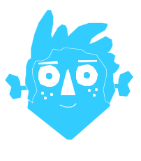

As a kid, I would spend a lot of time day-dreaming. Especially during long car rides, summer afternoons, and at school.
The goal of this short was to capture that feeling (and maybe validate those missed school lessons).
To contrast the film’s “real world” and “dream world,” each is represented through different materials. The real world features flat paper cut-outs with a limited color palette, while the dream world is made up of 3D clay sculptures bursting with color variety.
Using a clay look was instinctual, since most of my childhood was spent making claymation stories. One of my favorite computer games was also "The Neverhood," which inspired the surreal shapes and textures of the dream world. Initial experiments were done using actual clay models, which helped to figure out how light reflects and reveals finger prints on the surface.
All final animation and modeling was done in Cinema4D.
Here’s six more words for you: Thank you very much for reading!
